R Notebook
Last updated: 2018-07-20
workflowr checks: (Click a bullet for more information)-
✔ R Markdown file: up-to-date
Great! Since the R Markdown file has been committed to the Git repository, you know the exact version of the code that produced these results.
-
✔ Environment: empty
Great job! The global environment was empty. Objects defined in the global environment can affect the analysis in your R Markdown file in unknown ways. For reproduciblity it’s best to always run the code in an empty environment.
-
✔ Seed:
set.seed(20180719)The command
set.seed(20180719)was run prior to running the code in the R Markdown file. Setting a seed ensures that any results that rely on randomness, e.g. subsampling or permutations, are reproducible. -
✔ Session information: recorded
Great job! Recording the operating system, R version, and package versions is critical for reproducibility.
-
Great! You are using Git for version control. Tracking code development and connecting the code version to the results is critical for reproducibility. The version displayed above was the version of the Git repository at the time these results were generated.✔ Repository version: b4b3382
Note that you need to be careful to ensure that all relevant files for the analysis have been committed to Git prior to generating the results (you can usewflow_publishorwflow_git_commit). workflowr only checks the R Markdown file, but you know if there are other scripts or data files that it depends on. Below is the status of the Git repository when the results were generated:
Note that any generated files, e.g. HTML, png, CSS, etc., are not included in this status report because it is ok for generated content to have uncommitted changes.Ignored files: Ignored: .Rproj.user/
Expand here to see past versions:
Experiment 1 - Motion
early
firstyear
Expand here to see past versions of unnamed-chunk-1-1.png:
| Version | Author | Date |
|---|---|---|
| e1e0b58 | ballardtj | 2018-07-19 |

Expand here to see past versions of unnamed-chunk-1-2.png:
| Version | Author | Date |
|---|---|---|
| e1e0b58 | ballardtj | 2018-07-19 |


late
firstyear
Expand here to see past versions of unnamed-chunk-1-7.png:
| Version | Author | Date |
|---|---|---|
| e1e0b58 | ballardtj | 2018-07-19 |

Expand here to see past versions of unnamed-chunk-1-8.png:
| Version | Author | Date |
|---|---|---|
| e1e0b58 | ballardtj | 2018-07-19 |


Experiment 2 - Brightness
early
firstyear 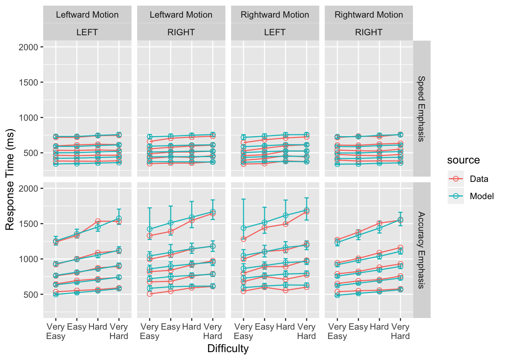
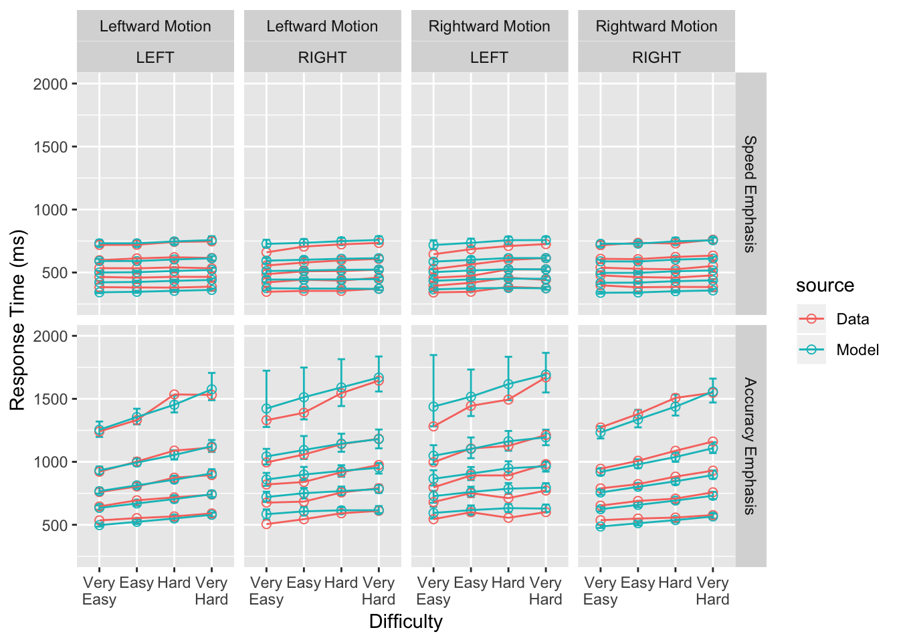
community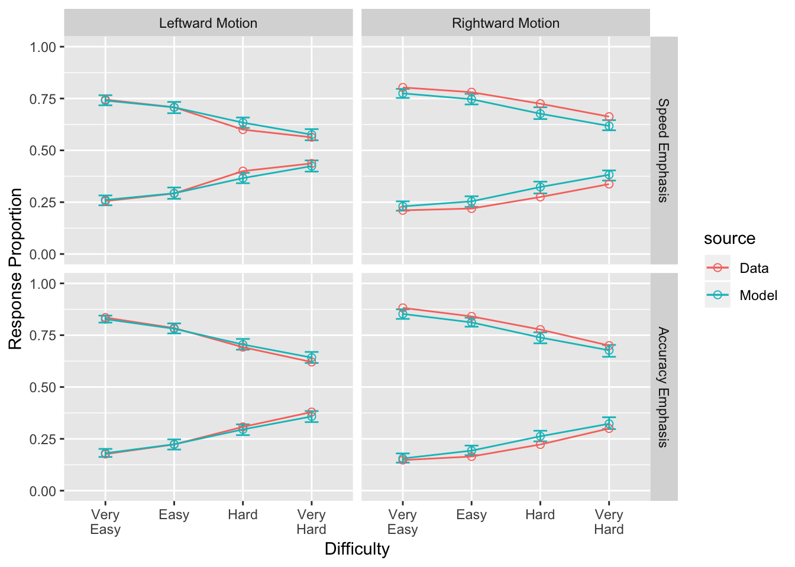
mturk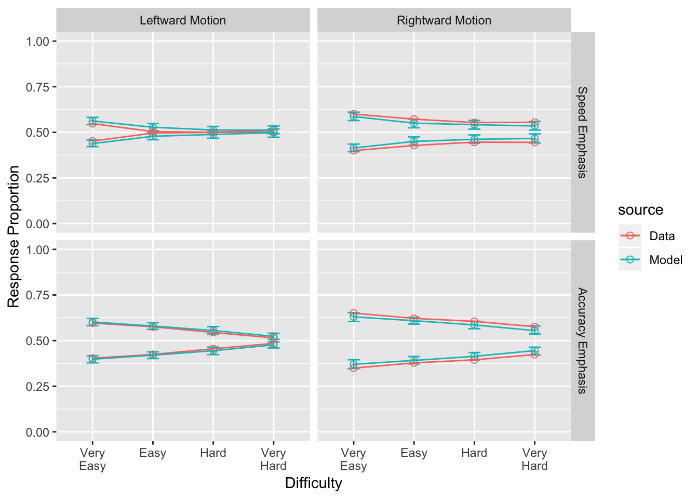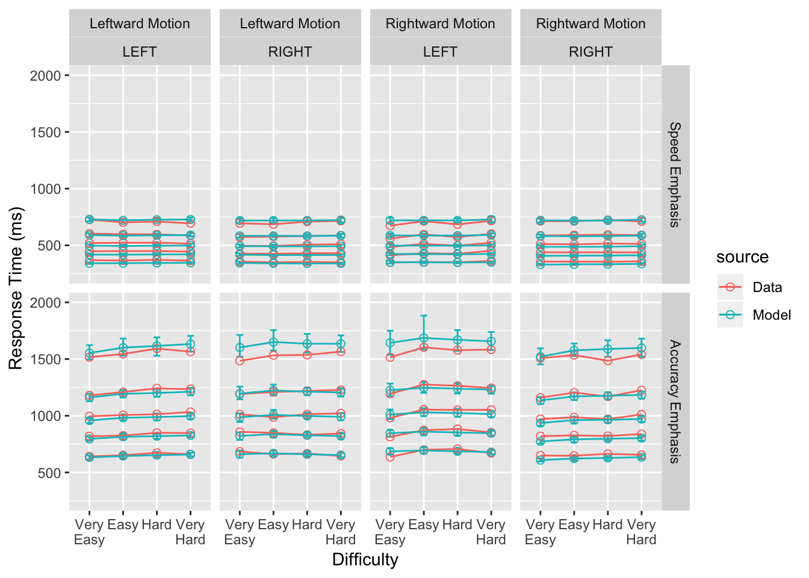
late
firstyear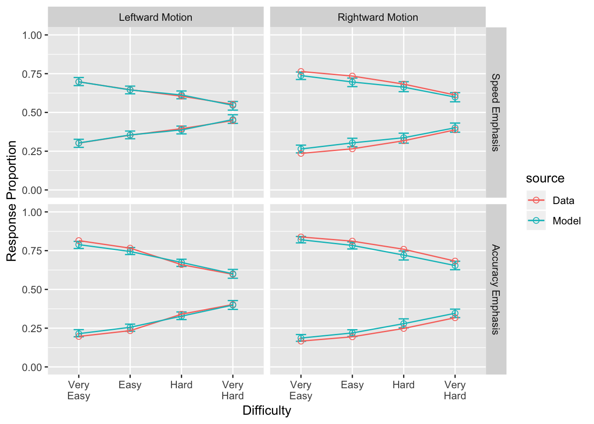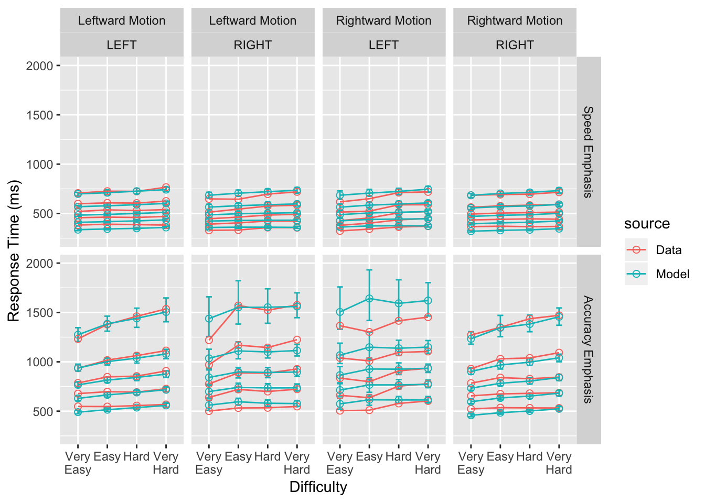
community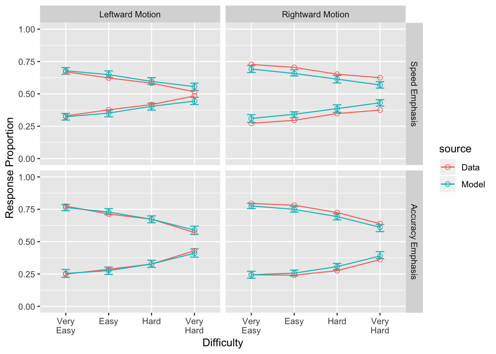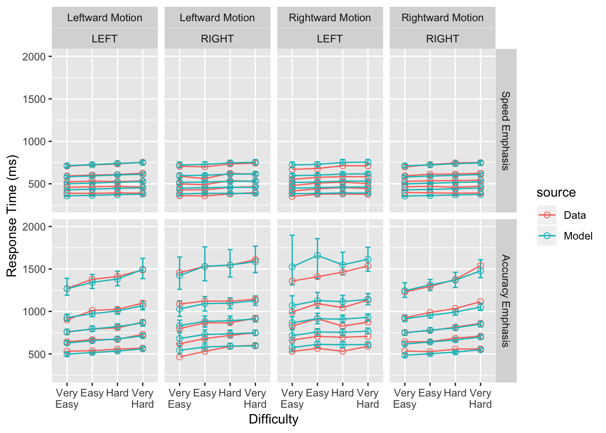
mturk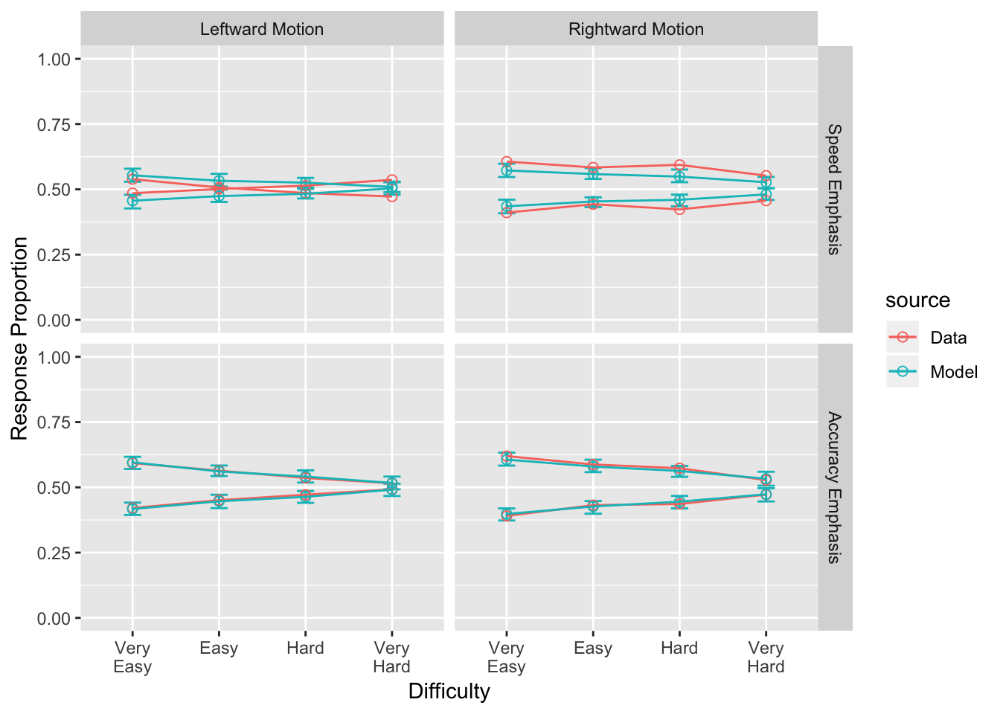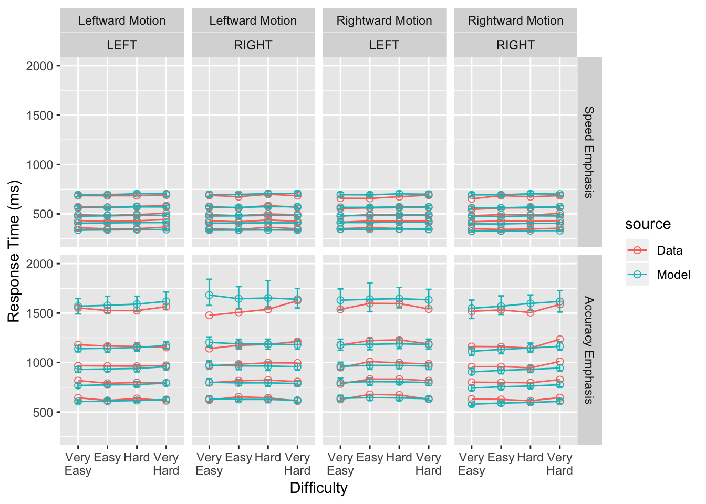
Session information
sessionInfo()R version 3.5.1 (2018-07-02)
Platform: x86_64-apple-darwin15.6.0 (64-bit)
Running under: OS X El Capitan 10.11.6
Matrix products: default
BLAS: /Library/Frameworks/R.framework/Versions/3.5/Resources/lib/libRblas.0.dylib
LAPACK: /Library/Frameworks/R.framework/Versions/3.5/Resources/lib/libRlapack.dylib
locale:
[1] en_AU.UTF-8/en_AU.UTF-8/en_AU.UTF-8/C/en_AU.UTF-8/en_AU.UTF-8
attached base packages:
[1] stats graphics grDevices utils datasets methods base
other attached packages:
[1] bindrcpp_0.2.2 forcats_0.3.0 stringr_1.3.1
[4] dplyr_0.7.6 purrr_0.2.5 readr_1.1.1
[7] tidyr_0.8.1 tibble_1.4.2 tidyverse_1.2.1
[10] rtdists_0.8-3 ggplot2_3.0.0 vioplot_0.2
[13] sm_2.2-5.4 numDeriv_2016.8-1 pracma_2.1.4
[16] statmod_1.4.30 hypergeo_1.2-13 loo_2.0.0
[19] coda_0.19-1 msm_1.6.6
loaded via a namespace (and not attached):
[1] httr_1.3.1 jsonlite_1.5 splines_3.5.1
[4] R.utils_2.6.0 elliptic_1.3-7 modelr_0.1.2
[7] assertthat_0.2.0 expm_0.999-2 cellranger_1.1.0
[10] yaml_2.1.19 pillar_1.3.0 backports_1.1.2
[13] lattice_0.20-35 glue_1.2.0 digest_0.6.15
[16] rvest_0.3.2 colorspace_1.3-2 htmltools_0.3.6
[19] Matrix_1.2-14 R.oo_1.22.0 plyr_1.8.4
[22] psych_1.8.4 pkgconfig_2.0.1 broom_0.4.5
[25] haven_1.1.2 mvtnorm_1.0-8 scales_0.5.0
[28] whisker_0.3-2 git2r_0.22.1 withr_2.1.2
[31] lazyeval_0.2.1 cli_1.0.0 mnormt_1.5-5
[34] survival_2.42-6 magrittr_1.5 crayon_1.3.4
[37] readxl_1.1.0 evaluate_0.10.1 R.methodsS3_1.7.1
[40] nlme_3.1-137 MASS_7.3-50 gsl_1.9-10.3
[43] xml2_1.2.0 foreign_0.8-70 tools_3.5.1
[46] hms_0.4.2 matrixStats_0.53.1 munsell_0.5.0
[49] compiler_3.5.1 evd_2.3-3 contfrac_1.1-12
[52] rlang_0.2.1 grid_3.5.1 rstudioapi_0.7
[55] labeling_0.3 rmarkdown_1.10 gtable_0.2.0
[58] deSolve_1.21 reshape2_1.4.3 R6_2.2.2
[61] lubridate_1.7.4 knitr_1.20 bindr_0.1.1
[64] workflowr_1.1.1 rprojroot_1.3-2 stringi_1.2.3
[67] parallel_3.5.1 Rcpp_0.12.17 tidyselect_0.2.4 This reproducible R Markdown analysis was created with workflowr 1.1.1